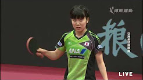
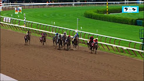

<!DOCTYPE html>
<html>

<head>
    <meta charset="utf-8">
    <meta name="viewport" content="width=device-width, initial-scale=1, shrink-to-fit=no">

    <title>Owl carousel</title>
    <link rel="stylesheet" href="https://maxcdn.bootstrapcdn.com/bootstrap/4.0.0-beta/css/bootstrap.min.css" integrity="sha384-/Y6pD6FV/Vv2HJnA6t+vslU6fwYXjCFtcEpHbNJ0lyAFsXTsjBbfaDjzALeQsN6M" crossorigin="anonymous">

    <link rel="stylesheet" href="dist/assets/owl.carousel.css">
    <link rel="stylesheet" href="dist/assets/owl.theme.default.min.css">
    <link href="https://fonts.googleapis.com/css?family=Raleway" rel="stylesheet">
    <link href="../lity-2.3.0/dist/lity.css" rel="stylesheet">
    <style media="screen">
        #myContainer {
            height: 500px;
            background-color: grey;
        }

        body {
            font-family: 'Raleway', sans-serif;
        }

        .item {
            user-select: none;
            /*user cannot select text*/
            position: relative;
        }
        .article {
          overflow: hidden;
          max-height: 308px;
        }
        .article .preview {
            margin-bottom: 15px;
            overflow: hidden;
        }

        .item .img-responsive {
            transform-style: preserve-3d;
        }

        .img-responsive {
            height: auto;
            max-width: 100%;
        }

        img {
            vertical-align: middle;
            border: 0;
        }

        .article .article-type {
            visibility: hidden;
            font-size: 14px;
            margin: 0 0 10px 0;
        }

        .article-time {
            position: absolute;
            right: 16px;
            font-size: 10px;
        }

        .article h3 {
            margin: 0 0 12px 0;
            color: #0e1e7d;
            text-transform: uppercase;
            font-weight: 600;
            -webkit-font-smoothing: antialiased
        }

        h3 {
            font-size: 15.5px;
            line-height: 20px;
        }

        article.article a {
            text-decoration: none;
            color: inherit;
        }

        article.article a p {
            font-size: 14px;
            text-overflow: ellipsis;
            overflow: hidden;
            display: -webkit-box;
-webkit-box-orient: vertical;
        }

        p {
            margin: 0 0 10px;
        }

      .faded{
        opacity:0.6;
      }

    </style>

</head>

<body>
    <div class="container">
        <div class="row">
            <div class="col-md-12">
                <div class="owl-carousel owl-theme">
                    <!--div class="item">
                        <article class="article news-article item">
                            <a class="read-more" href="#">
                                <header>
                                    <div class="preview">
                                        
                                    </div>
                                    <span class="article-type">news</span>
                                    <span class="article-time">Sat 9 Sep 2017</span>
                                    <h3>Rudiger: Early starter</h3>
                                </header>
                               <p>Today Toni Rudiger is facing his first game as a Chelsea player outside of London having been an ever-present in our league campaign so far...</p>
                            </a>
                        </article>
                    </div>
                    <div class="item"></div>
                    <div class="item"></div>
                    <div class="item"></div>
                    <div class="item"></div>
                    <div class="item"></div>
                    <div class="item"></div>
                    <div class="item"></div>
                    <div class="item"></div>
                    <div class="item"></div-->
                </div>
            </div>
        </div>
    </div>


</body>

</html>
<script src="https://ajax.googleapis.com/ajax/libs/jquery/3.2.1/jquery.min.js"></script>
<script src="https://cdnjs.cloudflare.com/ajax/libs/popper.js/1.11.0/umd/popper.min.js" integrity="sha384-b/U6ypiBEHpOf/4+1nzFpr53nxSS+GLCkfwBdFNTxtclqqenISfwAzpKaMNFNmj4" crossorigin="anonymous"></script>
<script src="https://maxcdn.bootstrapcdn.com/bootstrap/4.0.0-beta/js/bootstrap.min.js" integrity="sha384-h0AbiXch4ZDo7tp9hKZ4TsHbi047NrKGLO3SEJAg45jXxnGIfYzk4Si90RDIqNm1" crossorigin="anonymous"></script>
<script type="text/javascript" src="dist/owl.carousel.js"></script>
<script type="text/javascript" src="../lity-2.3.0/dist/lity.js"></script>

<script type="text/javascript">
    var myData = [{
            "id":1,
            "type": "news",
            "date": "SAT 9 SEP 2017",
            "imageUrl": "img/246x138-1.jpg",
            "title": "PMB: Leicester v Chelsea - tactics",
            "article": "In their Man United game, Jose Mourinho had special measures to deal with Leicester’s biggest threat: wingers Demarai Gray and Marc Albrighton, forwards Jamie Vardy, and now Kelechi Iheanacho, finding space behind the defence from raking passes by the likes of Riyad Mahrez. Vardy, with Shinji Okazaki just behind, gave the Gunners’ rearguard a tough ride at times on the opening day but the Red Devils defended deep and blocked channels in midfield, forcing him into wide areas. Chelsea may try to win the battle for midfield and stifle the hosts’ danger men in similar fashion."
        },
        {   "id":2,
            "type": "news",
            "date": "SAT 9 SEP 2017",
            "imageUrl": "img/246x138-2.jpg",
            "title": "Conte: The best conditions",
            "article": "Antonio Conte has been speaking about the qualities of new signing Danny Drinkwater, as well as the midfielder’s relationship with N’Golo Kante, ahead of today’s visit to their former club Leicester City. Drinkwater was one of two deadline-day arrivals at Stamford Bridge along with Italian defender Davide Zappacosta, who signed from Torino, and could potentially make his Chelsea debut this afternoon.During the 2015/16 campaign Drinkwater formed a formidable midfield partnership withKante as Leicester defied the odds to win the Premier League title, and Conte believes they will work well together once again.‘I think Danny is a really good player,’ said Conte. ‘Two years ago together with N’Golo they won the league. They played regularly and showed how strong they were.‘Danny is a strong player who can help us. The midfield is very important. I need midfielders with particular characteristics which he has. Now he must find his best physical condition to be ready tohelp us.’Conte also explained why the fact we have signed two new players will not lead to a change in shape or system for his side.‘We want to continue to play with this system because, don’t forget, there are 11 players who played last season and we changed our system to give them the best condition to exploit their talent. With the new signings we have to try to give them the best chance to be in top condition.’"
        },
        {   "id":3,
            "type": "news",
            "date": "SAT 9 SEP 2017",
            "imageUrl": "img/246x138-3.jpg",
            "title": "Rudiger: Early starter",
            "article": "Just over a month after he was a late substitute in the Community Shield match, Toni Rudiger is facing his first game as a Chelsea player outside of London having been an ever-present in our league campaign so far. He has also been in action for Germany over the international break, with notable success too, so the official Chelsea website sat down with the summer addition to the defence to look back at the opening weeks and ahead to games to come, including this afternoon’s fixture in Leicester. He also has an insight into another addition to the squad…IT HAS BEEN A PRETTY BUSY FIRST MONTH OF THE SEASON FOR YOU…‘For me it was important to adapt to the new place, to the new club, to the new country, and I have to say thank you to the guys and to the staff as they helped me a lot.‘To adapt it has been good to play games. Of course I came here because I want to play and I want to develop myself, and sometimes in life it is like this, someone gets suspended or injured. It is not that I wish that for my team-mates of course, but sometimes football works like this and then I have the chance to show myself very quickly in this team.‘I think it was positive for me and I would like to continue like this but it always depends on my effort in the training, and also in the games, and the coach decides.’"
        },
        {   "id":4,
            "type": "news",
            "date": "FRI 8 SEP 2017",
            "imageUrl": "img/246x138-4.jpg",
            "title": "Under-18s preview: Rivals test record",
            "article": "Our youth team return to action in the Under-18 Premier League this morning (Saturday), with Arsenal the visitors to Cobham for a London derby captured live by the Chelsea TV cameras (kick-off 10.30am).The young Blues will tick over 900 days unbeaten at home in all competitions if they avoid defeat against the Gunners, who were the nearest challengers to Jody Morris’s side last term, finishing runners-up to our youngsters in the both the south section and national merit round.It is an unblemished record that stretches across four different seasons, 42 games undefeated all the way back to April 2015 when Middlesbrough took the points home following a 3-1 victory. Morris frequently used the run as motivation for his players during the Treble-winning campaign of 2016/17 and it continues to be a source of inspiration as a new crop of first-year scholars step forward.George McEachran is a more familiar face in the Under-18 surroundings, the midfielder featuring on 26 occasions last season and in every game so far this term. His goals opened the scoring against both Aston Villa and Norwich City last month, with his impact in front of goal highlighted as a key area for further improvement in the months ahead by the coaching staff.‘We want to carry on the unbeaten run for as long as possible,’ the 17-year-old tells the official Chelsea website as we look ahead to the game. ‘Jody and Ed [Brand, Under-18s assistant] speak about it quite a lot and it’s a big thing for the Under-18s group. "
        },
        {   "id":5,
            "type": "video",
            "date": "FRI 8 SEP 2017",
            "imageUrl": "img/246x138-5.jpg",
            "title": "MANAGER'S PRESS CONFERENCE: Leicester v Chelsea",
            "article": "Antonio Conte will welcome some new faces into his squad for the trip to Leicester including, for the first time this season, Eden Hazard.The Belgian was a major topic of discussion at the manager’s pre-match press conference at Cobham today, as were our new signings Danny Drinkwater and Davide Zappacosta, with the boss commenting on them for the first time since the transfer window shut last week.He had good news to report on the injury front with everyone now available, but as many of the squad have been playing all over the world during the international break he did also acknowledge tiredness would be a factor for some.Hazard featured in both of Belgium’s games, a decision Conte was in complete agreement with, and he provided an update on our star winger.‘Eden is available, he is in the squad for the game,’ Conte said.‘He is improving a lot. He worked very hard to be ready. Now I can count on him, but for sure I have to decide the right moment and the right minutes for him. When there is a bad injury and surgery, it’s normal to pay attention to the recovery.’Since the manager’s last press conference we signed two new players and Conte gave his verdict on them, starting with Drinkwater, our final signing of the transfer window.‘We are working with him, and we are trying to get him in the best physical condition. He is a good buy for us, he is working very well and this week he improved his physical condition a lot. He is in the squad for the Leicester game but I don’t know when he will be ready to play.‘Davide Zappacosta played against Israel for the national team which shows he is in good physical condition,’ Conte added of his compatriot.‘He worked with me at the national team, he knows my style of football and my ideas very well, and for this reason it is more simple for him to adapt himself to our style.‘He is a good, young player and he has a lot of space to improve. He makes good runs during the game, he has good quality and he is a wing-back. Usually he prefers to play on the right but sometimes he plays on the left.‘Davide is ready and very soon you can see his performances. It’s a great chance for him. It’s not easy to play in another country with another type of football, but he has the right characteristics to adapt himself very soon.’Conte also dismissed speculation regarding Ross Barkley as ‘ridiculous’, and he reiterated that the club had done its best in the transfer market.Now his attention is fully focused on what happens on the pitch, beginning with tomorrow’s trip to the East Midlands.‘It was a good moment to stop for the international break,’ Conte explained. ‘It allowed us to recover the players very well - Hazard for example - and then it gave me the possibility to work with players who need to adapt to our style of football.‘Tomorrow it will be important to start very well, because in September we have seven games in 21 days. You have to analyse every game and try to have a program, a plan in your mind, but it’s important to analyse game by game, because after Leicester I don’t know if there will be injuries or suspensions, and sometimes you have to change your plan.’And there are reasons why we must be careful tomorrow against the team we inherited our Premier League crown from.‘I watched Leicester’s previous games this season and I saw a very strong team, a team with great concentration and focus. They lost a game against Arsenal at the end and we must pay great attention because they have players like Vardy, Mahrez, Maguire, and great experience with Morgan and Fuchs.’"
        },
        {   "id":6,
            "type": "newPosition",
            "date": "SAT 9 SEP 2017",
            "imageUrl": "img/246x138-6.jpg",
            "title": "PMB: Leicester v Chelsea - history",
            "article": "Club historian Rick Glanvill and club statistician Paul Dutton look at some of our past encounters with Leicester...WE HAVE HISTORYChelsea have taken all three points on four of our past five league visits to Leicester.Last season, Tottenham had ended the Blues’ long run of consecutive league wins prior to our arrival at the King Power Stadium in mid-January.The 3-0 victory was a welcome boost, though it would prove one of former Blues boss Claudio Ranieri’s last games in charges of Leicester. It was a Saturday evening kick-off and Spurs had clipped Chelsea’s lead to four points.The visitors made up for lost time by pinging the ball around majestically and netting inside 10 minutes through Marcos Alonso’s sweeping strike. The wing-back doubled the tally soon after the break when the hosts failed to clear a Willian corner, and Pedro started and finished the move for Chelsea’s third, heading in from close range after Willian’s shot rebounded off Kasper Schmeichel."
        },
        {   "id":7,
            "type": "news",
            "date": "FRI 8 SEP 2017",
            "imageUrl": "img/246x138-7.jpg",
            "title": "Azpilicueta: Dare to dream",
            "article": "The return of European football means the Blues have a busy September schedule ahead, starting with tomorrow’s trip to Leicester. Cesar Azpilicueta has been considering what we need to do to challenge on different fronts this season, and he has also given some more detail on his own role in the team.An ever-present in our league success last term and yet to miss a minute this, the defender joined Chelsea the summer after we lifted the European Cup. He is relishing the chance to play in that competition again after a year without, but he is also intent on remained focused on the bread and butter of domestic action.‘The biggest challenge is obviously to retain the title,’ Azpilicueta said. ‘We performed to a very highlevel last season, but we know that it’s a fiercely competitive league and that it’s always even tougher the year after you’ve been crowned champions.‘We’re working hard day in, day out to rise to that challenge. We took a lot of people by surprise last season. They didn’t have us down as contenders, but we showed what we’re made of by winning the Premier League title and reaching the FA Cup final.‘Now we’ve got new challenges ahead of us.’It is nearly a year ago now that Azpilicueta and his team-mates were presented with a new challenge by Antonio Conte: to shift to a 3-4-3 formation. For the Spaniard that meant moving from left-back to the right side of a three-man defence. The results for him and the team were immediately positive.‘I’m enjoying it a lot. For me, it was a new position, a new challenge. I had no doubts about it from the very first moment the coach told me he wanted me to play there. I thought I was capable of doing it and I’m always trying to improve and take in advice to keep on developing as a player.‘It’s important to have that flexibility and be ready for it, because the coach can choose between different systems depending on our opponents. So it’s important to have confidence in order to be able to swap systems.‘In a three-man defence you get more in touch with the ball and you participate more when distributing it. The way you attack is different too, because when you play as a full-back you do so in wide areas. You can cross the ball from closer to the box.’Azpilicueta speaking at a Champions League press conference in Paris ahead of our quarter-final tie with PSG in 2014.After tomorrow’s game in the East Midlands, when Azpilicueta will be hoping to assist Alvaro Morata as he did in our win against Everton before the international break, we host Qarabag in the Champions League. It marks our return to continental action and the 28-year-old can’t wait.‘It’s the most prestigious competition in Europe, and every player wants to be part of it. I really enjoy playing in these games.‘After not being in the competition last year, it was important that we got back into it and we did that at the first time of asking. Now we’re relishing the challenge of making an impression on our return to the competition.‘We’ll go step by step. I think our first step should be winning our group. If you take a look at the teams that have qualified, all of them can make life hard for you. That should encourage us to give it our all.‘Winning the competition would mean everything,’ concludes Azpilicueta. ‘I think everyone always dreams of it and, of course, whenever we’re in this competition, we dream of doing just that.’Tickets are now sold out for our Champions League opener against Qarabag next week but some matchday packages remain as well as seat-only options for £65 which are on sale now."
        },
        {   "id":8,
            "type": "foundation news",
            "date": "FRI 8 SEP 2017",
            "imageUrl": "img/246x138-8.jpg",
            "title": "The Chelsea Foundation",
            "article": "Formed in 2010, the Chelsea Foundation brings together the Football in the Community and the Education department along with the club’s other charitable and community activities, including environment and anti-discrimination projects.As one of the world’s leading football social responsibility programme the Chelsea Foundation uses the power of sport to motivate, educate and inspire. We believe that the power of football can be harnessed to support communities and individuals both at home and abroad.On top of our outstanding football development programmes, the Chelsea Foundation works on a broad range of initiatives focusing on employment, education, social deprivation, crime reduction, youth offending and much more."
        },
        {   "id":9,
            "type": "news",
            "date": "FRI 8 SEP 2017",
            "imageUrl": "img/246x138-9.jpg",
            "title": "Quick Quotes: Conte on transfer window change",
            "article": "Premier League clubs yesterday voted to change the date the transfer window will close next summer. It will now shut on the Thursday before the first weekend of the season, and this is what Antonio Conte had to say about the news..."
        },
        {   "id":10,
            "type": "news",
            "date": "FRI 8 SEP 2017",
            "imageUrl": "img/246x138-10.jpg",
            "title": "Dates set for Ladies European matches",
            "article": "The dates for Chelsea Ladies’ Champions League matches have been set, while there has been a change to the date of an upcoming FA WSL fixture.Emma Hayes’s side were drawn to play Bayern Munich in the Champions League, and the home game will take place at Kingsmeadow on Wednesday 4 October with a 7pm kick-off time.The away leg will then follow a week later on Wednesday 11 October, that game also kicking off at 7pm.Our FA WSL home game against Liverpool, which was originally scheduled for Sunday 8 October, will now be held on Saturday 7 October. The match will kick off at 12.30pm.Ticket details for the two home games will follow shortly."
        },
        {   "id":11,
            "type": "news",
            "date": "FRI 8 SEP 2017",
            "imageUrl": "img/246x138-11.jpg",
            "title": "Clarke-Salter's Royal reception",
            "article": "Jake Clarke-Salter has spoken of his personal pride after the England Under-20 World Cup-winning squad met HRH The Duke of Cambridge yesterday.The England youngsters, who triumphed at the tournament in June courtesy of a 1-0 win over Venezuela in the final, were invited to a special reception at Kensington Palace to mark their magnificent achievement.Clarke-Salter was joined at the event by Blues team-mate Fikayo Tomori (pictured below, far right), who is spending the 2017/18 season on loan at Hull City, and he told the official Chelsea website why it was a day he will always look back on fondly.‘We met Prince William and it was a real honour,’ said Clarke-Salter. ‘He congratulated us all and told us how proud he was that we won the competition. He was really keen to meet us because he’s an Aston Villa fan and he really likes his football, so it was a special moment for us all.‘In total we were there for around half-an-hour, he went around and spoke to us all individually and as a group about the tournament itself and the pressures we faced. He said he watched the games and told us after the final he was buzzing that we’d won it.’Now, three months on from the triumph, Clarke-Salter explained why the group will always be so proud of their success.‘Only one England team have ever won the World Cup so for us it was a huge achievement and something which we are all really proud of,’ he said. ‘I have my medal at home, it’s in a frame and it’s something I will always treasure.’"
        },
        {   "id":12,
            "type": "column",
            "date": "THU 7 SEP 2017",
            "imageUrl": "img/246x138-12.jpg",
            "title": "Giles Smith’s Thursday Thoughts",
            "article": "With a busy few days of football at Stamford Bridge on the horizon, season ticket holder Giles Smith is licking his lips as he gives his fan’s-eye view in this week’s column…It’s here at last! That time in the year that we football fans live for: when the waiting is over and the longed-for moment is at last upon us; when the talking can finally stop and the action begin; that wonderful point when everyone’s hopes and dreams are still intact, and when we can all wonder what stories might yet come to be written on the fresh, blank page of the season ahead.Yes, it’s the resumption of Premier League football after the first international break, and if you’re not excited when this fabled day on the calendar comes around, then maybe football isn’t really your game.Get up to much during the interval? I had a fairly quiet one, for the most part. I’m always tempted to take them at their word and greet the international break by having an international break. But in this case, it’s a bit soon after the summer and I’d probably struggle to get the time off work. Still, sometimes knocking about at home can be just as restorative as heading off and putting your feet up somewhere more exotic, and I’m properly refreshed and raring to go now, and I don’t doubt that you’re the same.I just hope we can pick up where we left off – which, if you cast your mind back, you’ll remember was comprehensively beating a strong Everton side at Stamford Bridge on an unfashionably sunny Sunday lunchtime.It all seems such a long time ago, now, of course, but it was a victory which made the opening day’s mishap (remember that?) look even more like an isolated moment of madness and took us to the campaign’s first enforced holiday period in rather good shape.Ordinarily at this point you might be talking about unnecessary frustration and disrupted rhythm. However, this year there’s at least some consolation in the form of an immediate burst of games – four in 10 days, three of them at home – to help get us back in the swing. First of all, when proper football resumes on Saturday, we face Leicester away. And directly after that, on the Tuesday, we make our longed-for return to the top table of European football against Qarabag, repeating to ourselves, I’m sure, as we walk to the stadium, the traditional mantra about there being no easy games at this level.Then, on the following Sunday, it’s Arsenal at home in the Premier League – and then, on the Wednesday after that, the magic of the Carabao Cup brings Nottingham Forest to our place – this following the controversial third-round draw for that competition a couple of weeks ago, which, in what was definitely a first for the League Cup, took place in China at 4.15am British time.People complained about that, but I’ve got to say, I wasn’t among them. Indeed, I thought it was quite a smart move, promotionally speaking, because most years, when the draw for the League Cup third round takes place, barely anybody notices, but this year people couldn’t stop going on about it. "
        },
        {   "id":13,
            "type": "news",
            "date": "THU 7 SEP 2017",
            "imageUrl": "img/246x138-13.jpg",
            "title": "World Cup qualifying - how it stands",
            "article": "Many of our players have been flying the flag for their respective countries over the past two weeks, looking to book their place at the 2018 World Cup in Russia or in some cases having already done so.Here we take a look at what the current state of play is for those nations with Chelsea representation."
        },
        {   "id":14,
            "type": "feature",
            "date": "THU 7 SEP 2017",
            "imageUrl": "img/246x138-14.jpg",
            "title": "Home and Away: Kerry Dixon",
            "article": "Having made 420 appearances and scored 193 goals over the course of his nine-year Chelsea career, Kerry Dixon is an all-time favourite of the Stamford Bridge faithful.It was Dixon’s goals which helped inspire the Blues to two Second Division title triumphs in the 1980s and, ahead of this weekend’s trip to Leicester City, we spoke to our former forward about some of his favourite experiences of playing away from home for the club…Kerry Dixon guaranteed goals. Home or away, rain or shine, he simply possessed a natural ability to put the ball in the back of the net.After scoring a brace on his Chelsea debut, in a 5-0 win over Derby County on the opening day of the 1983/84 season, he barely looked back. Another two goals followed a week later at Brighton and a memorable campaign would end with John Neal’s side crowned Second Division champions.The victory which secured the title came on the final day, at Grimsby Town’s Blundell Park. Chelsea won the game 1-0 and it was fitting that Dixon, whose goals had been so instrumental in our promotion push, headed home the clincher, his 34th of a remarkable campaign.‘It was one of the highlights of my nine years at Chelsea, without a doubt,’ Dixon tells the club’s official website. ‘I have so many special memories of that game, especially the fans. There was just a sea of blue everywhere you looked as we approached Grimsby on the M62, and then during the game there were loads of delays because the supporters kept spilling on to the pitch due to the fact there were so many of them. It was only a small stadium but we had thousands up there.‘I remember Pat Nevin’s cross coming in and I rose and managed to head it past the Grimsby keeper Nigel Batch. Pat then missed a penalty, although it wasn’t his worst one, which meant we had a bit more time to sweat, but it was just a wonderful day.‘For us to beat Sheffield Wednesday to the title first time around was amazing. Throughout that season the Chelsea fans were brilliant, it was a wonderful way to win it and the celebrations that ight were great.’Back in the top flight, the Blues faced a huge opening game away at Arsenal. It was a day on which Dixon would score one of his most iconic goals, a volley in front of the Clock End which housed thousands of travelling Chelsea supporters.Goalkeeping legend Pat Jennings had saved Dixon’s initial shot, but he could do nothing about the striker's follow-up, which earned the Blues a credible 1-1 draw.‘We didn’t know what to expect because the majority of our side hadn’t played in the old First Division, which is now the Premier League,’ Dixon recalls. ‘We were away against one of the biggest teams in the country who were full of internationals.‘It was quite incredible when the team bus pulled around the corner to see the amount of Chelsea fans in the streets and queuing to get into the ground. It was an early game and the coach couldn’t get past the fans, there were so many of them and they were making so much noise. We obviously had thousands in the Clock End, but they were everywhere in the ground that day.‘It was a decent strike and obviously it was enjoyable for me to get the goal. We went on to draw the game, after going 1-0 down, which was a big statement for the team. Arsenal were one of the contenders to win the league so that game gave us an idea of what we needed to do and where we needed to be. We were a growing team, one which was only going to get better.’On a personal level, it was a wonderful first season in the top flight for Dixon, whose 36 goals helped us secure a sixth-place finish, and he ended the campaign sharing the Golden Boot with a certain Gary Lineker, then of Leicester City, our opponents this weekend.‘Gary was at Leicester and we had a good battle all season,’ he remembers. ‘They had a good team and Alan Smith was there at the time as well. We beat them 3-0 at home and I scored two.‘Gary is one of England’s all-time greatest goalscorers. The career he had was absolutely magnificent and it was an honour for me to be up there challenging with him. For one reason or another we were rivals throughout the majority of our careers.’Dixon was one of those players who thrived on the big occasions, always liable to produce the goods against the best sides. There were certain opponents he always did well against, and specific stadiums in which he generally thrived, one of which was Old Trafford.There were two seasons in a row where Dixon was the match-winner at the Theatre of Dreams, and one performance in particular which paved the way for a huge moment in his career.‘The first game, when I scored two (video below), was in 1986 and we won the game 2-1. My performance that night got me to the World Cup because I’d been injured for a few months. I came back, Don Howe (England assistant manager) was at the game and he told Bobby Robson I looked as though I was back to my best.‘We always used to do well up at Old Trafford in those days. The following season we won 1-0 and I scored the winner very early on. I remember Tony Godden saved a penalty that day and had a great game. They battered us but we held on to win.‘There were certain grounds, like Old Trafford and White Hart Lane, where we used to do well, and then there were others we’d struggle at a little bit.‘I scored my 150th goal at Tottenham, a lob from a Graham Roberts pass in a 4-1 win. It was one of those grounds that seemed to bring out the best in all Chelsea strikers at that time.’WATCH NOW KERRY DIXON V MANCHESTER UNITEDA TOUCH OF CLASS06/09/2017With the Blues having been relegated in 1988 via a two-legged play-off defeat to Middlesbrough, a fit and firing Dixon was always going to be needed if we were to gain promotion at the first time of asking.Fortunately, as in 1983/84, his goals once again went a long way to helping us win the Second Division title with a record 99 points. Dixon scored 25 times, including one in a big away win against Manchester City, our closest challengers.‘I remember that was a morning game, we started on fire and went 3-0 up,’ says Dixon. ‘I scrambled one in and Kevin Wilson scored as well, then obviously Tony Dorigo scored that famous goal. Man City had a corner and we broke out, I was quick and I managed to keep up with Tony. I was hoping he’d pass to me but he sprinted away and slotted it in. I would have gone mad if he’d missed. They staged a comeback and scored two but we managed to hold on for an important win against our biggest rivals that season.‘That game, at Maine Road, was another one where Chelsea had unbelievable support. Our away following was phenomenal. They’d always take the full allocation, they were very vocal and there were some games where we’d take up to 10,000 fans away. It was one of the big features of the era I played in.’"
        }

    ];
    var html = "";
    for (var i = 0; i < myData.length; i++) {
        html += '<div class="item">' +
            '<article class="article news-article item" data-id="'+myData[i].id+'" id="article'+myData[i].id+'">' +
            '<a class="read-more" href="#article'+myData[i].id+'" data-lity>' +
            '<header>' +
            '<div class="preview">' +
            '' +
            '</div>' +
            '<span class="article-type">' + myData[i].type + '</span>' +
            '<span class="article-time">' + myData[i].date + '</span>' +
            '<h3>' + myData[i].title + '</h3>' +
            '</header>' +
            '<span class="dotdotdot">'+
            '<p>' + myData[i].article + '</p>' +
            '</span>'+
            '</a>' +
            '</div>';
    }
    $(document).ready(function() {
        console.log("doing");
        var carouselChanged = function(event){
          console.log("changed");
        };
        $('.owl-carousel').html(html).owlCarousel({
            center: true,
            items: 1.2,
            /*awesome, figuured out how to change what appears on the sides*/
            loop: true,
            margin: 10,
            nav: false,
            dots: false,
            onDragged:carouselChanged,
            responsive: {
                600: {
                    items: 4
                }
            }
        });


        	$('.article').each(function(){
            var h3 = $(this).find("h3");
            var h3text= h3.text();
            var h3lineHeight = parseFloat(h3.css("line-height"));
            var h3height = parseFloat(h3.css("height"));
            var p = $(this).find("p");
            p.attr("data-article",p.text())
            var pLineHeight = parseFloat($(this).find("p").css("line-height"));


            var titleHeight = pLineHeight * (4-(h3height/h3lineHeight)); //getTitleHeight();
            p.css("height",titleHeight);
            p.css({
  "-webkit-line-clamp": "" + titleHeight/pLineHeight + ""
});
            console.log(h3text+" nl: "+h3height/h3lineHeight+ " pLineHeight: "+pLineHeight +" th: "+titleHeight);

          })


    });
</script>
